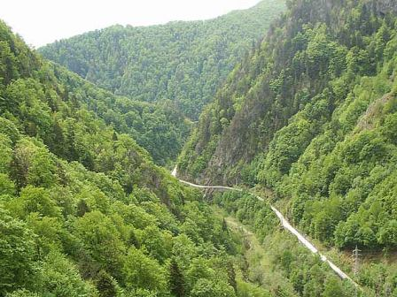

DN 7C alias "Transfagaran" |
| Pornit din comuna Bascov, dupa 61 km dincolo de comuna Arefu începe portiunea asa numitului Transfagarasan, pe o lungime de aproximativ 91 km.
Transfagarasanul (de la prefixul „trans-” + Fagaras) face parte din Drumul National 7C (DN7C) si este unul din cele mai spectaculoase drumuri din România, numit si „drumul din nori”,
care leaga regiunea istorica a Munteniei cu Transilvania. Drumul construit peste Muntii Fagaras, cel mai înalt lant muntos din România, care face parte din Carpatii Meridionali, este
un drum asfaltat care în apropierea tunelului de lînga Lacul Bâlea, ajunge la altitudinea de 2042 m. Transfagarasanul este situat pe locul al doilea ca altitudine în România dupa soseaua
Transalpina (DN67C) cu 2145 m din Muntii Parâng, dar aceasta însa nu este asfaltata în totalitate. Primul segment al Transfagarasanului trece prin fata hidrocentralei de la Vidraru
amplasata subteran în masivul Cetatuia. De aici, în apropierea cetatii Poenari, drumul urca pe serpentine si viaducte, trecând prin trei tunele mai scurte ajungând pe Barajul Vidraru,
care cu ai lui 307 m leaga Muntii Pleasa si Vidraru. Trecând barajul, drumul continua în partea stânga de-al lungul lacului Vidraru pîna la începutul acestuia. În continuare drumul începe
sa urce în serpentine, trecând pe la Cascada Capra, pîna la partea sudica al tunelului de la Capra la Bâlea Lac, unde cu o lungime de 887 m strabate Muntii Fagaras. Tunelul Bâlea, cel mai
lung tunel din România, cu o înaltime de 4,4 m, 6 m latime si un trotuar cu o latime de 1 m, neiluminat si neaerisit, face legatura cu partea nordica a Transfagarasanului.
În partea nordica a drumului, dupa Tunelul Bâlea Transfagarasanul trece prin rezervatia naturala Golul Alpin si Lacul Bâlea, pe la lacul glaciar Bâlea urmat de o coborâre abrupta în
serpentine. Trece în apropierea cascadei Bâlea, care este o cascada în trepte de aproximativ 68 m, cea mai mare de acest fel în România, si se afla la altitudinea de aproximativ 1230 m.d.M.
În timpul iernii, de obicei de la 1 noiembrie pâna în 30 iunie (sectorul cuprins între kilometrul 104 de la Piscu Negru si kilometrul 130 la cabana Bâlea Cascada), când Transfagarasanul
este închis circulatiei rutiere, la Lacul Bâlea se poate ajunge cu telecabina, de la cabana „Bâlea Cascada” din apropierea cascadei Bâlea. Unul din tronsoanele cele mai dificile ale
Transfagarasanului, este cuprins între Lacul Bâlea si Bâlea Cascada pe o lungime de 13 km. De la Bâlea Cascada pîna la intersectia cu drumul DN1 sau si drumul european E68 în apropierea
comunei Cârtisoara, mai sunt 21 km. Transfagarasanul trece peste 830 podete, 27 viaducte; pentru constructia lui a fost necesar sa fie dislocate mai multe milioane de tone de roca; pentru
aceasta s-au folosit de exemplu: 6520 tone de dinamita, din care 20 de tone numai la tunelul Capra – Bâlea si multe alte materiale de constructii.
|
Galerie poze "Transfagarasan": |
| |
|  | |
|
Muntii Apuseni- comoara Transilvaniei |
 Muntii Apuseni sunt un lant muntos din Transilvania, parte a Carpatilor Occidentali. Cel mai înalt vârf este Curcubata Mare (cunoscut si ca Vârful Bihor) cu o altitudine de 1849
de metri. Sunt delimitati la nord de Râul Barcau, la sud de râul Mures, la vest de Dealurile si Câmpia de Vest, iar la est de Depresiunea Colinara a Transilvaniei. În Muntii Apuseni
se afla peste 400 de pesteri.
Muntii Apuseni reprezinta una din cele mai intereseante destinatii turistice din Romania.
Relieful carstic (aproximativ 400 pesteri), precum si flora si fauna specifica reprezinta tot atatea motive pentru care a zona fost declarata rezervatie naturala.
Locuitorii acestei zone, motii, sunt renumiti pentru obiectele din lemn pentru uz gospodaresc, pe care continua sa le confectioneze de generatii, mergand sa le vanda in toata tara.
Ciuberele si donitele de lemn din Apuseni pot fi intalnite in majoritatea targurilor din Romania. Inca se mai pot vizita asemenea ateliere artizanala la Patrahaitesti, unde, daca sunteti
curiosi, puteti auzi si renumitele tulnice sau buciume. Satul Patrahaitesti apartine de comuna Arieseni, fiind accesibil in timpul verii si cu masina.Pe durata verii, locuitorii isi duc
cirezile de vite pe culmi, unde acestea raman pana la venirea toamnei. Pe toate pasunile inalte sunt prezente "hodaile", adaposturile de vara ale celor ce au grija de turme.
Daca doriti sa descoperiti viata locala si traditii pastrate de generatii, una din zonele de interes este Valea Ariesului, incluzand frumoasele sate Albac, Garda, Arieseni.
Pe langa relieful carstic variat (Cetatile Ponorului, Padis, Groapa Ruginoiasa, Poarta lui Ionele, Ghetarul de la Scarisoara, Focul Viu etc.), un punct de interes il reprezint Muzeul
aurului de la Brad, unde exista o bogata colectie de pepite, dar si de unelte traditionale pentru extragerea aurului, indeletnicire ce dateaza de peste 2000 ani. Muntii Apuseni sunt un lant muntos din Transilvania, parte a Carpatilor Occidentali. Cel mai înalt vârf este Curcubata Mare (cunoscut si ca Vârful Bihor) cu o altitudine de 1849
de metri. Sunt delimitati la nord de Râul Barcau, la sud de râul Mures, la vest de Dealurile si Câmpia de Vest, iar la est de Depresiunea Colinara a Transilvaniei. În Muntii Apuseni
se afla peste 400 de pesteri.
Muntii Apuseni reprezinta una din cele mai intereseante destinatii turistice din Romania.
Relieful carstic (aproximativ 400 pesteri), precum si flora si fauna specifica reprezinta tot atatea motive pentru care a zona fost declarata rezervatie naturala.
Locuitorii acestei zone, motii, sunt renumiti pentru obiectele din lemn pentru uz gospodaresc, pe care continua sa le confectioneze de generatii, mergand sa le vanda in toata tara.
Ciuberele si donitele de lemn din Apuseni pot fi intalnite in majoritatea targurilor din Romania. Inca se mai pot vizita asemenea ateliere artizanala la Patrahaitesti, unde, daca sunteti
curiosi, puteti auzi si renumitele tulnice sau buciume. Satul Patrahaitesti apartine de comuna Arieseni, fiind accesibil in timpul verii si cu masina.Pe durata verii, locuitorii isi duc
cirezile de vite pe culmi, unde acestea raman pana la venirea toamnei. Pe toate pasunile inalte sunt prezente "hodaile", adaposturile de vara ale celor ce au grija de turme.
Daca doriti sa descoperiti viata locala si traditii pastrate de generatii, una din zonele de interes este Valea Ariesului, incluzand frumoasele sate Albac, Garda, Arieseni.
Pe langa relieful carstic variat (Cetatile Ponorului, Padis, Groapa Ruginoiasa, Poarta lui Ionele, Ghetarul de la Scarisoara, Focul Viu etc.), un punct de interes il reprezint Muzeul
aurului de la Brad, unde exista o bogata colectie de pepite, dar si de unelte traditionale pentru extragerea aurului, indeletnicire ce dateaza de peste 2000 ani.
|
Galerie poze "Muntii Apuseni:" |
 | |
| |
|
1.Zlatna |
Zlatna este o depresiune aflata între 2 lanturi muntoase - muntii Metaliferi de origine vulcanica, cu vârful Jidov cu o înaltime de peste 900 m si de Muntii Trascau, munti
formati prin încretire din care se remarca vârful Dâmbau cu o înaltime de 1.369 m. Pricipalul râu care trece prin Zlatna este Ampoiul care care are o lungime de aproximativ 50 km
si se varsa în râul Mures în municipiul Alba Iulia. |
2.Pestera Scarisoara |
Pestera Scarisoara sau Ghetarul de la Scarisoara adaposteste cel mai mare ghetar subteran din România. De aici îi vine si numele de Ghetar iar Scarisoara vine de la comuna
Scarisoara situata 16 km mai jos, de care apartinea administrativ în vremea cand a fost botezata. Acum apartine de comunei Gârda de Sus, judetul Alba.
Pestera Ghetarul de la Scarisoara face parte din sistemul carstic Ghetar - Ocoale - Dobresti, reprezentând (alaturi de Pestera Pojarul Politei) etajul superior, fosil al acestuia. Este sculptata
în calcare de vârsta Jurasic superior, dispuse monoclinal pe directia NV-SE, la o altitudine de 1165 m, la marginea platoului carstic Ghetari - Ocoale. Lungimea totala a pesterii este de 720 m,
denivelarea (negativa) fiind de 105 m. Se dezvolta pe o succesiune de fete de strat (vizibile în special în Sala Mare si în Galeria Maxim Pop); salile mari ale pesterii fiind formate la contactul
dintre fetele de strat si diaclaze. Accesul se face printr-un aven de 48 de metri adâncime si 60 de metri în diametru. La baza avenului se gaseste poarta propriu-zisa a pesterii care da acces la
o sala imensa, numita Sala Mare, cu un diametru de aproximativ 47 m, ce se continua spre NV cu Sala "Biserica", principala atractie turistica a pesterii. În partea de sud a Salii Mari se deschide
intrarea larga de 15 m si înalta de 7 a Galeriei Maxim Pop, care dupa ce coboara 68 m se continua cu Rezervatia Mare a pesterii.
Din aceasta se urca în Catedrala, frumos concretionata si lipsita de gheata. Din Catedrala, printr-o mica "fereastra" se trece în Culoarul Coman, cel mai cald sector al pesterii (+50C), de asemenea
lipsit de gheata, dar bogat în concretiuni calcitice.
Tot din Sala Mare se ajunge în Rezervatia Mica (spre nord), prin coborârea unei faleze de gheata înalta de 14 m. In sectorul nord - estic al Rezervatiei Mici se gaseste Palatul Sânzienei, lipsit de gheata si concretionat.
Principala "resursa" stiintifica si turistica a pesterii, blocul de gheata, are un volum de 75.000 m3 si o grosime medie de 16 m (forajul efectuat în februarie 2003 a ajuns la o adâncime maxima de 22,53 m).
Se gaseste cantonat în Sala Mare, formând planseul acestei sali, de unde se prelungeste sub forma unor "limbi de gheata" în Rezervatia Mare, Biserica si Rezervatia Mica. În aceste trei sali, la o
oarecare distanta de blocul de gheata se dezvolta stalagmite de gheata, cu dimensiuni variabile, de la câtiva cm la peste 10m (în Biserica). Spre deosebire de blocul de gheata care are are o vârsta de
3500 ani (Pop, Ciobanu, 1950), aceste stalagmite se pot topi de la un an la altul, sau chiar disparea în unele perioade (Viehmann, com. pers.).
Galerie poze "Ghetarul Scarisoara": |
| |
|